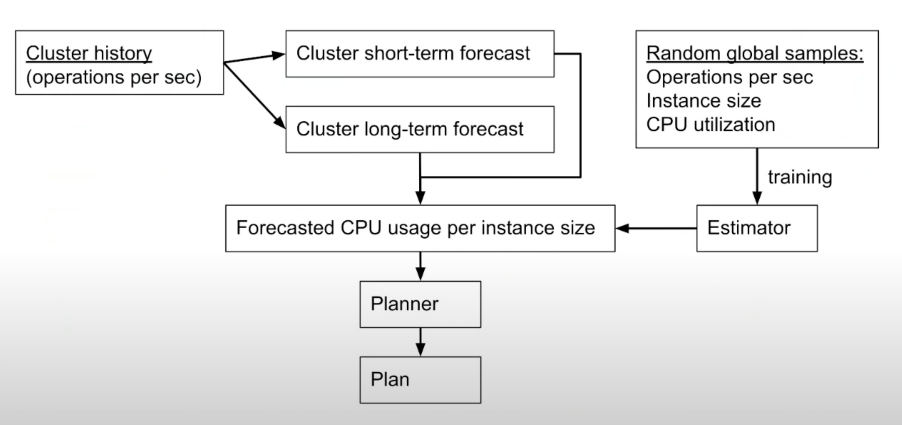
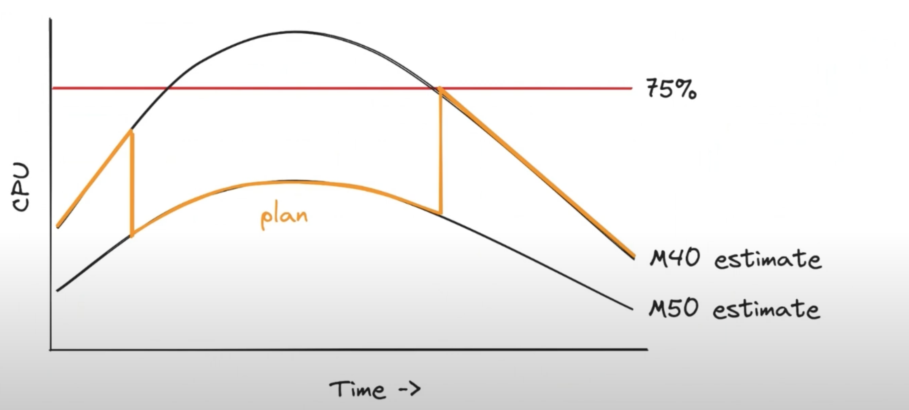
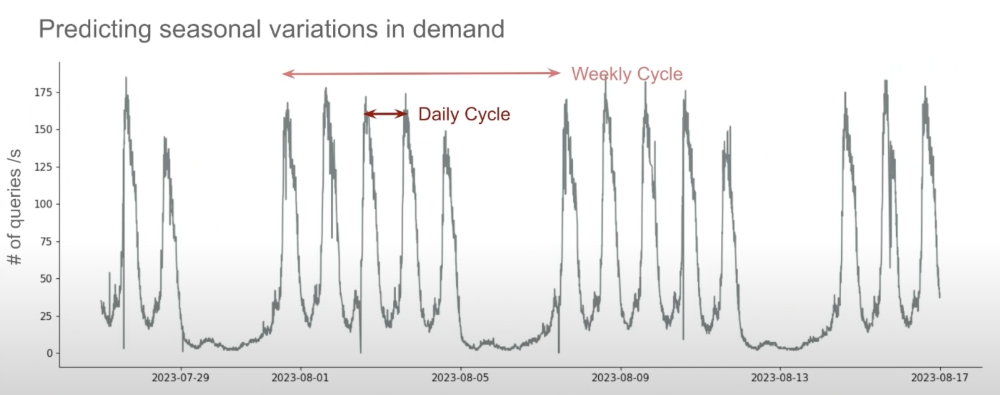
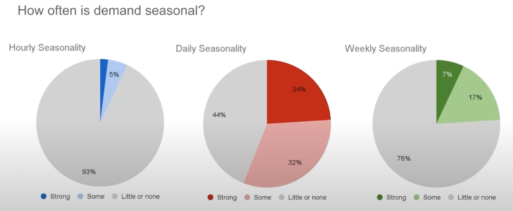
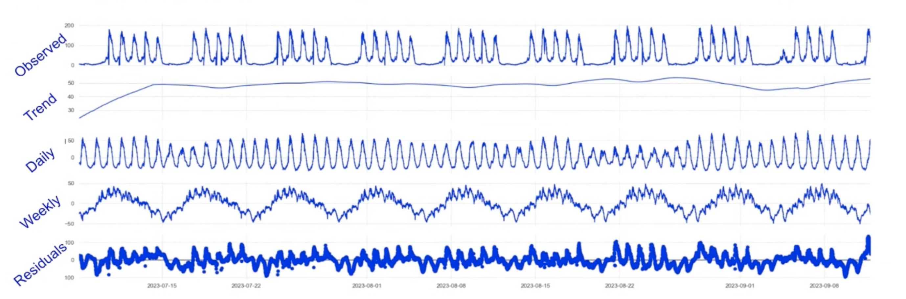
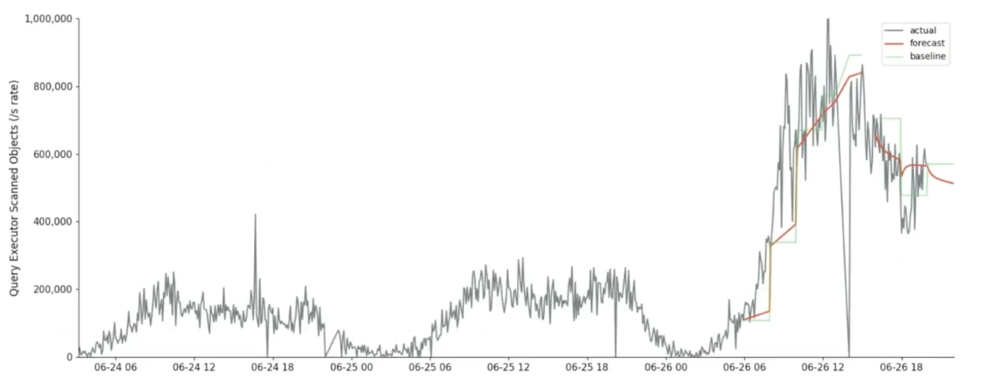
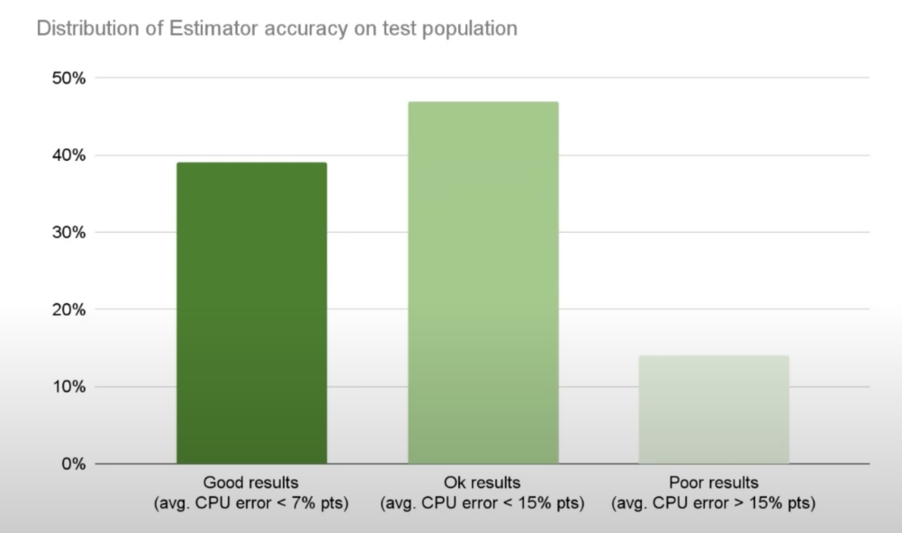

Both Humeau (Staff Data Scientist) and Davis (Sr. Staff Research Engineer) work at MongoDB and were experimenting with MongoDB to see if predictive scaling would work for MongoDB Atlas (their cloud hosted service).
MongoDB
- NoSQL Document Database
- MongoDB Query Language
- Strong consistency, high availability, ACID transactions
MongoDB is usually deployed as a 3-node replica set.
The primary handles both reads and writes while the secondaries allow query scaling but their main purpose is being a hot standby.
MongoDB can also be deployed as a sharded cluster so each replica set ends up owning a portion of the data. A routing service (mongos) routes the queries to these replica sets from the client.
MongoDB Atlas can be multi-region, multi-cloud.
Problem Statement: Can we save money by predicting customers’ workload fluctuation and choosing the smallest server that’ll serve them for each quarter hour or so?
Customers can select cluster tiers on MongoDB Atlas with different storage, RAM and vCPUs which map internally to various instances on the cloud provider.
Vertical Scaling in Atlas
Once a customer requests to upgrade/downgrade their instance, Atlas takes over and automatically goes through these steps:
- Take a secondary offline.
- Detach its network storage.
- Restart it w/ a different server size.
- Reattach storage.
- Wait for it to catch up to the primary.
- Scale the other secondary likewise.
- Step down the primary and scale it.
- There’s a co-ordinated handoff where Atlas chooses a secondary and starts it up so that there’s even less downtime than normal.
This process takes about 15 mins (for a 3-node set).
Auto-scaling Today
Primitive currently. Atlas scales infrequently and reactively basis some rules like:
- Scale up by 1 tier after 1 hour of over- load.
- Scale down by 1 tier after 24 hours of under-load.
- Even if the load dis-appears entirely, the cluster won’t scale down multiple levels at once.
Issues
- Clusters can be over/under-loaded for long periods.
- Clusters are already overloaded when they start scaling up.
Ideal Future
- Forecast each cluster’s resource needs.
- Scale a cluster up before it’s overloaded.
- Scale it down as soon as it’s underloaded.
- Scale directly to the right size, skipping intermediate tiers.
Predictive Scaling Experiment
- The experiment was possible because MongoDB had kept record of server’s performance metrics (workload, CPU, memory) in 1-minute intervals in a data warehouse for a few years then for 160K clusters.
- They chose 10K clusters (of customers who had opted in to auto-scaling) and analyzed their history from previous year.
- Split the history into a training period and a testing period.
- Trained models to forecast the clusters’ demand and CPU utilization.
- Built a prototype and tested how a predictive scaler would’ve performed during testing period, compared to the reactive scaler that was running at that time.
Components of the Autoscaler
- Forecaster : forecasts each cluster’s future workload.
- updated continuously (every minute or every few mins)
- Estimator: estimates CPU% for any workload, any instance size.
- given some inputs (like instance size, QPS), outputs CPU required
- difficult because they can’t see the customer’s data or queries
- long-lived and doesn’t depend on an individual cluster’s day to day fluctuations
- only trained (again) when there’s a new and more efficient version of mongodb available or there’s a new cloud instance type
- Planner: chooses cheapest instance that satisfies forecasted demand.

Planner

If the planner realizes that you’re going to be overloaded on the cheap server (M40) then it’ll start the migration and upgrade the instance to the pricier M50 before you’ll be overloaded.
Similarly, if you’re not forecast to be overloaded, it’ll downgrade the instance back again.
Forecaster (Long-term)
Initially, they thought to just forecast the CPU usage.
- But if you forecast the CPU usage and then use that to make scaling decisions that’ll affect the usage then it creates a circular dependency.
- Eg: If the system forecasts a spike tomorrow and scales accordingly to absorb it then it’s not going to be able to forecast it.
So, they needed to forecast metrics that won’t be affected by their scaling decisions. They chose customer-driven customers like:
- QPS
- Connections in the cluster
- Query complexity (repr. by the no. of items scanned by the query engine)
- DB size
These metrics can be considered to be (almost be) independent from the instance size and the state of the cluster.

They found that more than half of the customers had daily patterns in their usage and about a quarter of them had weekly patterns too.

Forecasting Model
- Used the MSTL (Multi-Season Trend decomposition using LOESS) model for forecasting.
- MSTL takes the whole time series and tries to extract individual components in that time series.
- Used ARIMA forecast for residuals (which are mostly randomly distributed)

The seasonal component is forecasted with the trend and the residuals to get a forecast for the required metrics.
The forecaster is called long-term because it needs several weeks of data to be trained. It’s cheap to run so it can be run often.
Accuracy
Median MAPE (Mean Absolute Percentage Error)
| Seasonal Clusters | Non-seasonal Clusters | |
|---|---|---|
| Connections | 3% | 50% |
| Query Rate | 19% | 71% |
| Scanned Objects Rate | 27% | 186% |
Not usable for non-seasonal clusters.
Instead of maintaining a system that knows which cluster is seasonal or not, when the model runs, it also produces a score for confidence and if that’s too low, it’s not used for predictive scaling.
Forecaster (Short-term)
What about unexpected (i.e. non-seasonal) changes in demand? Or if a cluster doesn’t have a seasonal component? Or the seasonality changes?
Can it do better than the reactive scaler?
The short-term forecaster uses only the last hour or two of data to try to infer what’s going to happen in near future.
Does simple trend interpolation (if load is increasing, it’s going to keep increasing and so on.)
- Not supposed to be very accurate but to save a few minutes and scale early thus avoiding scaling an overloaded cluster.

Local trend approach beats the naive approach 68% of the time (29% reduction in error)
Estimator
The forecasted customer-driven metrics are turned into CPU estimates.
Takes
- Demand
- Top metrics: Scanned objects, insert rate, query rate, connections
- Instance Size
- vCPUS, RAM
And outputs the CPU% (can be RAM or IOPS too)
In ML terms, they’re solving a regression problem to predict CPU utilization.
- The model used to Gradient Boosted Trees.
- Trained successively by always training on the errors of the previous ones.
- Trained on 25mn samples (of demand, instance size and the target value which is CPU utilization)
For 45% of customer clusters, error is under 7%.

Conclusion
| Predictive auto-scaler | Reactive auto-scaler | |
|---|---|---|
| Avg. distance from 75% util. target | 18.6% | 32.1% |
| Avg. under-utilization | 18.3% | 28.3% |
| Avg. over-utilization | 0.4% | 3.8% |
Avg. Estimated Cost Savings: $0.09 / cluster / hour
Future Work
- Addressing the Estimator’s shortcomings (to expand the portion of customers that they’re not able to serve now). Exploring things like:
- additional data about hardware spec to the model (eg. cloud provider, generation of instance etc.)
- modeling memory with CPU
- adding more granular data about query patterns
- Running live experiments on real hardware to validate accuracy results
- Goal: Integrate w/ current reactive scaler. Not released yet.
Q/A
- When you talk about modeling memory, what’s the unit there? Is it cache-hit rates? How can you be memory bound in a database?
- We’ve 15 or 20 different memory metrics. Haven’t explored much. It includes cache size, RAM being consumed etc.
- Does Mongo prevent queries from running if there’s not enough memory?
- It doesn’t. But the diff. b/w accessing data from disk and RAM is enormous so mongodb cache as much as possible.
- Certain workloads are cache-killers while others are cache-friendly. If the DB is spending all its time waiting for the disk then the CPU will seem idle & you’ll think that it’s not a bad workload whereas it’s an awful workload so we’re trying to model the whole system as one thing for the ML system.
- Do you ever run into issues where instances are just not available from the cloud provider?
- Haven’t heard about that happening. We use common instances and there’s always enough supply.
- How quickly are you making the decision to scale up or scale down? The workload might keep fluctuating up and down.
- Scaling takes about 15 minutes. The planner tries to find the cheapest instance that’ll satisfy the demand for as long as would be required before it’d have to scale again.
- We make up plans that don’t require us to scale more often than every 15 mins.
- Compared to the reactive scaler (which only scales 1 instance at a time), how much does the predictive scaler benefit from prediction vs. from scaling by multiple tiers?
- Didn’t look into this in detail. From looking into the data, it’s rare that we need to scale more than 1 tier at a time. The gains are from scaling at the right time rather than having to do with scaling multiple tiers.
- How do you determine confidence in the model?
- We check how well-fitted it is to the near history. We train it on the long history but look at fitted score on recent history.
Appendix
- Inspired by Rebecca Taft’s PhD thesis
- Also see, Is Machine Learning Necessary for Cloud Resource Usage Forecasting?